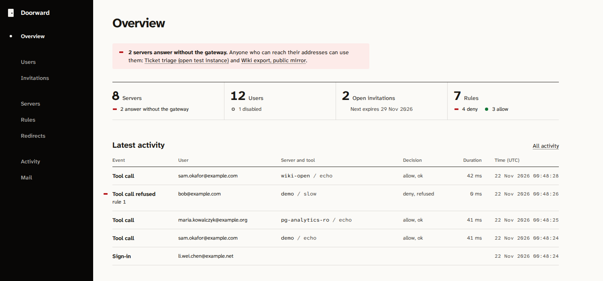
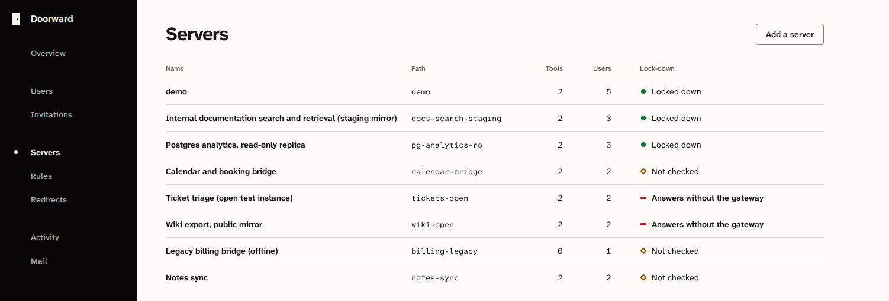
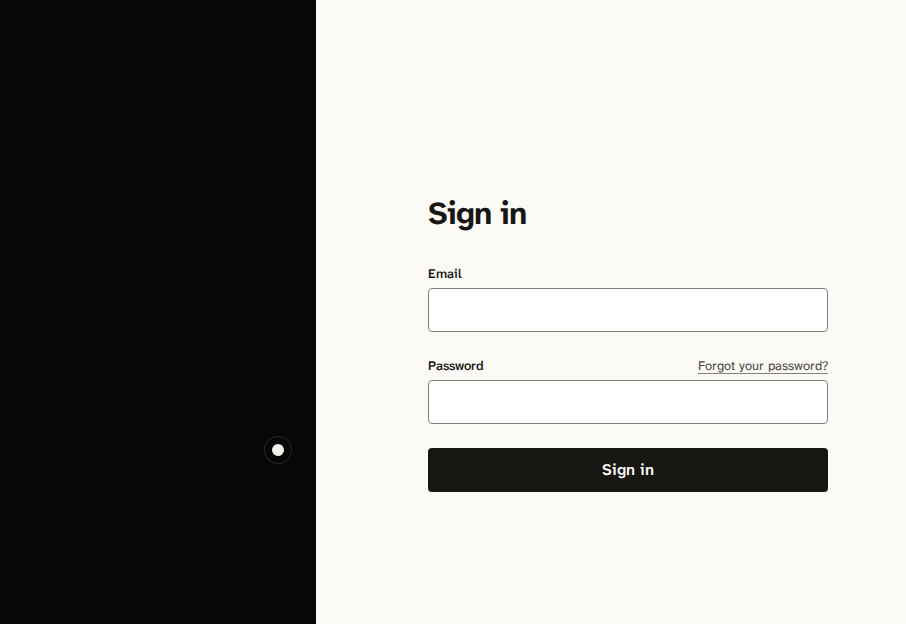
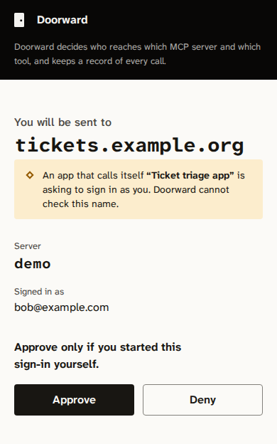

An authentication gateway in front of your MCP servers.
People sign in with an email and a password. An admin decides who may use which server and which tool. Every request is checked before it reaches a server.
A server that answers any request can be used by anyone who can reach its address. Locked down behind Doorward, it answers the gateway only, and every tool call is recorded with the person who made it.
Quick start Watch the tutorial, 11 min Source
- Version 1.0.0
- MIT or Apache-2.0
- One binary, one SQLite database
How a connection works
A client connects
Any MCP client that supports streamable HTTP and OAuth should work. Both client registration methods are supported.
-
Client
It is given one address. One server, or
/mcpfor every server the person may use.https://gateway.example.com/<slug> DoorwardIts own OAuth server. The client discovers it and finds the sign-in pages by itself.
-
Person
Signs in, then approves. The browser opens the gateway’s sign-in page: an email and a password.
DoorwardAsks for consent. The consent page names the client, the server and the signed-in person. Approve only a sign-in you started yourself.
PersonApproves. Approve only a sign-in you started yourself.
-
Doorward
Issues tokens that only work at the gateway. Access tokens last 60 minutes and refresh tokens rotate.
ClientConnected. Each person sees their connected clients on their account page and can disconnect one there.
MCP serverSees none of this. The upstream servers never see the tokens.
Then, every request
-
Client
Lists the tools, or calls one. At the same address, with its token.
DoorwardChecks it before it reaches a server. Is the server assigned to this person? Does a rule deny this tool, for this person or for everyone?
-
Doorward
Allow. With no matching deny rule, every tool of an assigned server is allowed. The gateway adds the server’s secret header to the request it forwards and never passes on the visitor’s token or cookies. Another header that a client sends reaches the server only where an admin declared it and switched on pass-through.
MCP serverAnswers the gateway only. Locked down, it refuses any request without the secret header.
-
Doorward
Deny. A denied tool is left out of the tool list and refused when called. The request stops here.
-
Doorward
Writes it down. In the activity log, with the person who made the call.
What you get
In the README’s words. It ships as one binary with one SQLite database.
- One address per server
- Each MCP server you add gets a path,
https://gateway.example.com/. A combined endpoint,<slug> /mcp, offers the tools of every server a person may use, named<path>__<tool>. - Its own OAuth server
- MCP clients discover it, send the person to the gateway’s own sign-in and consent pages, and get tokens that only work at the gateway. The upstream servers never see them.
- Invitations
- The first person to sign up owns the instance. Everyone else comes in through a one-time link that expires, and sets or resets their own password by email.
- Access rules
- Servers are assigned to people. Allow and deny rules cover all tools, one server, or one exact tool.
- Per-person credentials
- Where a server needs something from each person, such as an API token, an admin declares the header names. The gateway passes on the value the client sends, or sends the one that person stored, encrypted, on their account page.
- Activity log
- Every sign-in, admin change and tool call is recorded with the person who made it.
- Raw SMTP, Resend or Mailgun, set from the admin panel.
- Both protocol generations
- The session form and the stateless form of MCP over HTTP are both served.
The product itself
Real pages, not mock-ups. They follow your colour scheme.
Overview page

Servers page

Sign-in page

Consent page

The tutorial, in eleven minutes
Narrated, with subtitles burnt in: what Doorward is, how to run it, and how to check that it works.
Open it at a part
- What it is, how it connects
- Install, first start
- The admin panel
- Add a server, lock it down
- Custom headers, per person
- Invite people, set up mail
- Assign servers, write rules
- Connect a client, consent
- Your account, your credentials
- The activity log
- Test it yourself
Each time opens the video file at that point. The whole file is an MP4 of 49 MB.
Quick start
The binary on Linux, a proxy for HTTPS, one client. Click a command to select all of it.
-
Build it
The gateway runs on Linux; Windows is not supported. Build it with Rust 1.89 or newer.
cargo build --release -
Write a config file
Four settings are enough to start. Every setting can also come from an environment variable.
doorward.toml public_url = "https://gateway.example.com" listen = "127.0.0.1:8717" database = "/var/lib/doorward/doorward.db" trusted_proxies = ["127.0.0.1", "::1"]trusted_proxiesnames the proxy in front; the two loopback addresses fit a proxy on the same host. The directory ofdatabasemust exist and be writable by the gateway. -
Start it
./target/release/doorward --config doorward.tomlThe first start prints a setup code on standard error. Open
/setup, enter the code, and the account you create becomes the owner. The admin panel is at/admin. -
Put HTTPS in front
The gateway speaks plain HTTP and expects a proxy that terminates TLS: Caddy, nginx, a tunnel, or a load balancer. Caddy needs nothing more than the address.
Caddyfile gateway.example.com { reverse_proxy 127.0.0.1:8717 }nginx needs buffering turned off for event streams: the README has the block.
-
Add a server and lock it down
In the admin panel, add a server with a name, a path and its upstream address. Give it a secret header, configure the server to refuse any request without it, then press “Check lock-down” on the server page.
-
Connect a client
Give the client the address of one server, or the combined endpoint
https://gateway.example.com/.mcp Claude Code claude mcp add --transport http <name> https://gateway.example.com/<slug>claude mcp login <name>Codex codex mcp add <name> --url https://gateway.example.com/<slug>codex mcp login <name>The browser opens the gateway’s sign-in page, then the consent page. Approve only a sign-in you started yourself.
Or run it with Docker
Two Compose files are in the repository. compose.caddy.yaml runs Caddy in front of the gateway, with automatic HTTPS. compose.yaml runs the gateway alone, on the host’s loopback address, for a proxy or tunnel you already run.
cp .env.example .envdocker compose -f compose.caddy.yaml builddocker compose -f compose.caddy.yaml up -ddocker compose -f compose.caddy.yaml logs doorward
Set DOORWARD_PUBLIC_URL in .env before you build. The last command shows the line doorward setup code: <code>. Then follow docs/DOCKER.md: every setting, backups, upgrades.
Status
Version 1.0.0, and what that means today.
- Released
- Version 1.0.0. Fixes go into the newest release only.
- Run with real clients
- Claude Code, Codex and the Cursor command line client, against 0.1.0.
- Should work
- Any MCP client that supports streamable HTTP and OAuth: it finds the sign-in pages by itself, and both client registration methods are supported.
- Not supported
- Windows. The gateway runs on Linux.
- Limits
- Per-user permissions exist only in the gateway: every user reaches a server under one identity. Allow and deny rules cover tools only. A tool call still succeeds when its activity row cannot be written, for example on a full disk. Sign-in uses a password only; there is no second factor. The rest is in What the gateway does not do and Known limits.
- How it is checked
./check.shruns formatting, lints, every test, the dependency audits and the repository hygiene scan, and printsCHECK PASSwhen all of them pass. The proof scripts drive real clients and real HTTP against a throwaway gateway.
Before you rely on it
- Set up mail in the panel before you need it. A lost password, the owner’s included, is reset by email only: there is no command that sets one.
- The encryption key for stored secrets is created next to the database. Back it up with the database: one is useless without the other.
- An admin can point a server at any address the gateway can reach, one on your private network included, so give the admin role only to people you would give that reach.
- An
httpupstream address carries the secret header unencrypted between the gateway and the server: usehttpsunless the server runs on the same host or on a network you trust.
Help running it in production
Doorward is free and open source, and the README is enough to run it yourself. If your organization would rather not do it alone, Both Hands is the consultancy of Doorward’s author and offers paid help, in English and French.
- Installation and hardening
- Doorward on your own infrastructure, behind HTTPS, with backups, monitoring and a tested restore.
- Configuration
- Your MCP servers added and locked down, access rules per team, and your people’s clients moved over.
- Training
- Admins who can run the gateway, and staff who use MCP tools in production safely.
- Security review
- A second pair of eyes on an install you already have. Tell Both Hands what you need.